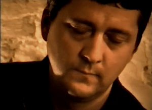

Minden apró tárgy fontossá válhat életünkben, minden semmiségnek tűnő dolog más dimenzióba lép, ha érzelmekkel telítjük, vagy érzéseinket zárják magukba. Bányay Péter apró tárgyakat emelt be művészetébe, így olyan tünékeny világot teremtett, amely emlékezésre késztet mindenkit. Így bizonyítható, hogy az individuális életérzéseknek van egy fő sodrása, amely minden emberben hasonlóképp működik, az alapélmények által létrejött kapcsolat a tudatalatti szférába vezet.Az összeférhetetlen dolgok a fotókon új harmóniában kapcsolódnak, ezek nem formai összefüggések, hanem érzelmet katalizáló különös képzettársítások. Megszűnik a külvilág, a fotók által kivágott tér egy sajátos mikroklímává változik, egy apró színpaddá, vagy inkább panoptikummá, ahol nincs cselekvés, de a különös színpad mégis az objektívnek látszó világot modellezné. Ezáltal a fotókban szereplő tárgyi elemek egyszerre fragmentumok és a valóság sűrített képzetei. Visszaemlékezve régen volt beszélgetéseinkre az alkotó gyermekkoráról mesélve említette, mennyire befolyásolja az a földközeli világ, mélyen belevésődött az apró gyermekként békaperspektívából szemlélt környezet, amikor a jelentéktelennek tűnő dolgok még hatalmasak voltak, s még a játékok apró csorbult részei is jelentéssel bírtak.
A játékok birodalmában minden megtörténhet, kozmikus találkozások történhetnek egy szobasarokban, vagy a fal melletti homokozóban. A szürrealista képzettársítások szinte természetes valóságként törnek fel és játszódnak le a gyermek fantáziájában. Számomra Bányay Péter műveiben ez a megőrzött gyermeki ártatlanság tereli össze a furcsa tárgyakat, ezért tűnnek emlékképnek. Én itt már jártam valaha – tolul fel bennünk az érzés, ez a vidék a lélek belső régióiban található.
Nem helyhez kötött ez a költői világ, a néző saját belső színpadán átalakíthatja a kibogozhatatlan történet megdermedt epizódjait, a történetből csak egy érzés marad, amely minden műből másképp árad. Mindenki a maga történetét érezheti, képzelheti a látvány mögé, mert a különös találkozások nem konkretizálhatók, csak a talányosság varázsa tartja a nézőt fogva. Ezért érezhetjük azt, hogy véletlen rátalálás által született képzettársítások, amelyek enyhe fuvallatként melankolikus érzést hoznak felszínre, némaságukkal mulandó szorongást okoznak. Az apró tárgyak az életet rekonstruálják, hiába az állandóság, a kimerevített pillanat, a látvány által feltoluló érzésben inkább a mulandóság dominál, ezért a furcsa csendéletek mintha a létezés öntapasztalata felé terelnének, kedélyállapot változást okoznak, kizökkentenek a lineáris időből, amely által kívülről tekintünk önmagunkra, saját létünkre emlékezünk. Nyugalmas csend árad a képekből, nem imitálnak semmit, önmagukba zárva a megfejthetetlen világ apró emlékműveivé válnak. A világ kicsinysége és nagysága összemosódik, a racionális világmagyarázatok haszontalanná válnak. A feltörő érzelmek a tudattalanból áramlanak, ezért valójában belső érzések, emóciók irányítják a képalkotást.
Művészi világának kialakulása idején, a főiskolás évek ideje alatt egy műteremben dolgoztunk és baráti kapcsolat, bensőséges viszony alakult ki, így a személyes beszélgetésekre emlékezve rekonstruálom Bányay Péter vonzódásait műveivel rokonítható törekvésekkel, feltárva művészetéhez kapcsolható inspirációkat, hatásokat. Ismerői számára talán fölöslegesnek és lehetetlennek tűnik egy introvertált, befelé figyelő alkotó művészi fejlődésének folyamatát megidézni, de életútjának alakulását, művészi világképének meghatározását még vázlatosan sem értelmezték.
Nyugodtan mondhatjuk, hogy az életút tapasztalatainak összetett szövedéke még az alkotó számára sem tudatosult hatások, benyomások által alakult ki. Nincs önelemző és önfeltáró írás az alkotótól, amely segítené a művek értelmezését. Meglátásom szerint sokszor a legszemélyesebb, legtitkosabb hatások irányították az alkotót, a művek tartalma is azt sugallja, hogy számára a lélek rejtett színpadán történő jelenségek kifejezése volt a cél.
Bányay Péter a szürrealista hagyományt folytatta, de annak egy sajátos, bensőséges vonulatát. Rajzain, képein szereplő talányos képzettársításai nem akarnak meghökkentők lenni, nincs bennük polgárpukkasztó lázadás. Rajzi stílusa improzatív felfogású volt, a kihagyás, a befejezetlenség módszerével szabadon kezelte a felületet. Az álomba tekintés, a véletlen rátalálás, mint alkotómódszer nem hordozhat kötött, stilárisan meghatározható formaalakítást, később Bányay Péter fotóiban a látásmód és szelektálás, a kompozícióalkotás továbbra is képzőművészre valló megformálás jellemző. Nem a meghökkentő pillanatra vadászott fotóival, rögzített tárgy-együttesei megfoghatatlan emléknyomok által érlelődtek, újrateremtve a belső fantáziaképet, így az elképzelt idea lassú érlelődési folyamaton ment keresztül.
Rajzaiban már kezdetben egy ironikus világlátás dominált, de az abszurd jelenetek feloldódtak a lírai megfogalmazásban. A különböző sokszorosító képgrafikai technikák használata befolyásolta stílusának alakulását. Grafikai munkássága egy groteszk világban teljesedett ki, amelyre végig jellemző volt a narratív felfogás, később a stilizálás által egyre emblémaszerűbb lett a képépítkezés, a cselekvő ember is szimbolikus, elvont lénnyé vált. Ez az egyszerűsítési folyamat a torzószerű figuraábrázolásig vitte, megjelent az a talányos kettősség, amikor az élő szereplő már csak bábként van mozgatva, vagy szobortöredékként tárgyiasul.
Bányay Péter vonzódott a naiv művészek világához, hosszasan mesélt Niko Piroszmanasvili grúz naiv festő életéről készült film varázslatos hangulatáról, vonzódott a talányos és megfejthetetlen történetekhez, a szürrealista filmek nagy hatással voltak rá. Volt egy időszak, amikor álomnaplót vezetett, ébredés után feljegyezte és értelmezte álmait, nyugodtan mondhatjuk, hogy a tudatalatti nála nagy jelentőséggel bírt és nagyrészt ez határozta meg alkotói tevékenységét. Ráébredve arra, hogy az öntudatlanul feltörő képi világnak milyen sűrítő ereje van, ezért munkamódszerébe nagy jelentőséggel bírt a véletlen által generált formakeresés, a szimbolikus jelentést hordozó formák spontán megidézése. A rátalálás, az ösztönös képalakítás, a jelképteremtő automatizmus képes feltárni az elfedett, elfojtott igazságokat, emiatt szükség van az önmegismerésre, a nyitottságra. Ez az alkotómódszer feltételezte, hogy a különös és sokszor bizarr képzettársítások, a meghökkentő történések által másképp láthatjuk a világot. Talán úgy, mint a zen-buddhista módszereknél, ahol a paradox történet, az összezavart logikai csavar által hirtelen megvilágosodik a tanítvány, amit csak hallgatás követhet, mert ez a megtapasztalás szavakban kifejezhetetlen.
Munkásságában Max Ernst és Joseph Cornell szellemi hatását kell megemlítenem, amely a nyolcvanas évek közepén változáshoz vezetett. Max Ernst szürrealista kollázs technikája, amely a felforgató dadaista kezdet után, a fametszetes illusztrációk abszurd, de lírai felhangú álomképekben teljesedett ki, ezt folytatta Joseph Cornell „varázsdobozaival”, amelyek berendezett vitrinek, az apró tárgyak, mint valami ereklyék, talizmánok, furcsa tárgy együttesként magukba zárt titkokat sugároznak. Ez a világ hasonlatos Pierre Roy festészetéhez, ahol az apró kacatok, papírból ragasztott kastély, művirág, kagylódarabka, kis üvegpohár, és még sorolhatnám, úgy rendeződnek el, ahogyan a gyermekek rendezik el játékaikat, vagy a kislányok társítják össze fetisizált apró emléktárgyaikat, álmodozásaikat kifejező szimbolikus tárgy együttesét. A tárgy kollázs technikája, a dobozkészítés, a különös jelentésű fotók és metszetek használata a szürrealista elődök hatása is kimutatható. Üvegrétegek közé helyezett ábrák által térillúziót keltő kollázsokat készített.
Ezek a képalkotó módszerek a fotózás által teljesedtek ki, és váltak sajátossá. A véletlen és az elrendezettség, a rátalálás és a megidézés, a tárgy-kollázs és a fotómontázs technika képteremtés eszköze maradt. A képzőművész tárgyalakító módszere érvényesült a fotók előmunkálataiban és a kész fotó jelentését is befolyásolta. Így a fotókon olyan érzéki felületek találhatók, olyan fakturális hatások, amelyek szinte tapintásra ingerelnek. Az erózió, a kopottság mellett, amelyek az elhasznált tárgyak felnagyított felületei légies sziluett-figurákkal együtt szerepelnek, más esetben a vaskosnak tűnő, felnagyított tárgyak előtt áttetsző, bizonytalan körvonalú árnyak lebegnek.
A gyermeki látás továbbélése egyben átélés általi mágikus tett. A kallódó tárgyak ereklyékké változnak, a felnagyítottság által új jelentést kapnak, szellemi töltődés által titkok hordozóivá válnak, a világ költői áttranszformálása, amelyek a belső érzékek lebegő világát szolgálják.
Gaál József